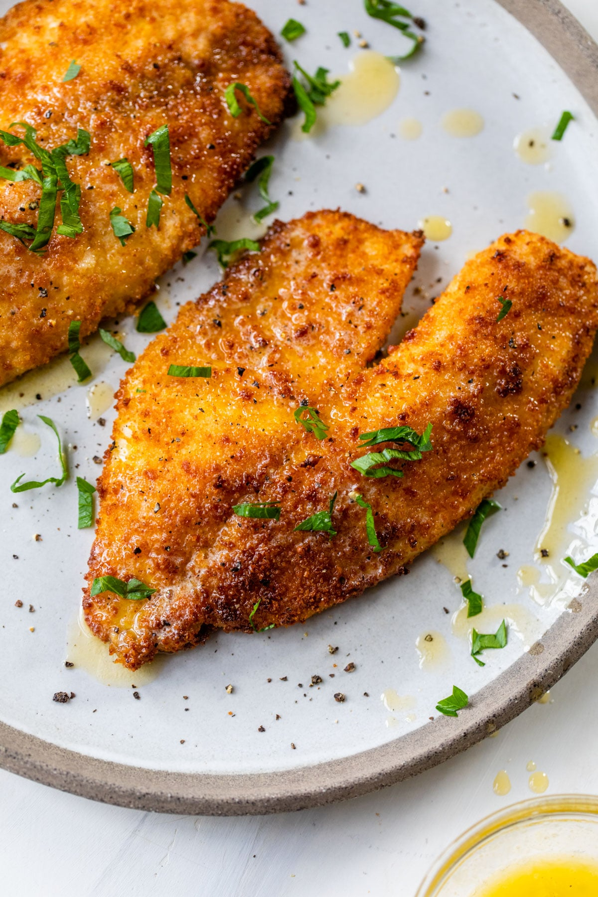

Air Fryer Tilapia

Description
Tilapia cooked in the air fryer is ready in minutes. Crusted in Parmesan
cheese comes out wonderfully moist and flavorful. Serve with rice pilaf or
roasted veggies.
Ingredients
- 1/2 cup freshly grated Parmesan cheese
- 1 1/2 teaspoons paprika
- 1 teaspon garlic powder
- 1/2 teaspoon salt
- 1/2 teaspoon freshly ground black pepper
- 4 (6 ounce) tilapia filets, thawed if frozen
- Cooking spray
- 1 tablespoon minced fresh parsley (optional)
- 4 lemon wedges (optional)
Steps
- Preheat the air fryer to 400 degrees F (200 degrees C).
-
Combine Parmesan cheese, paprika, garlic powder, salt, and pepper in a
bowl.
-
Pat tilapia filets fry with paper towels. Spritz both sides with cooking
spray, then press both sides of the filets into the Parmesan mixture.
Shake off any excess, then spray again with cooking spray. Place in the
basket of the air fryer.
-
Cook until the fish flakes easily with a fork, 6 to 8 minutes. You may
need to cook the fish in 2 batches, depending on the size of your air
fryer.
- Sprinkle with parsely and serve with lemon wedges.